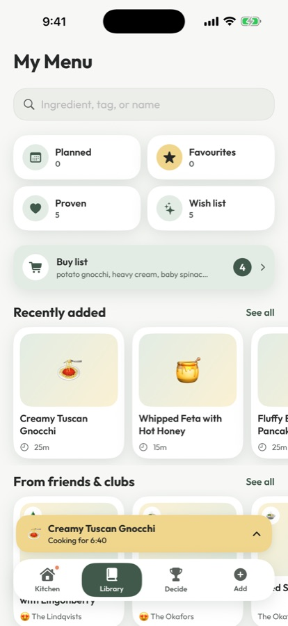

Save
Every recipe you've meant to make, in one place.
Tap Share in any app, then Supper. Links, videos, screenshots and photos of recipe cards become clean recipes with ingredients and steps, ready to cook.
- Favourites, proven hits and a wish list, kept apart
- Everyone's allergies and dislikes, always respected
